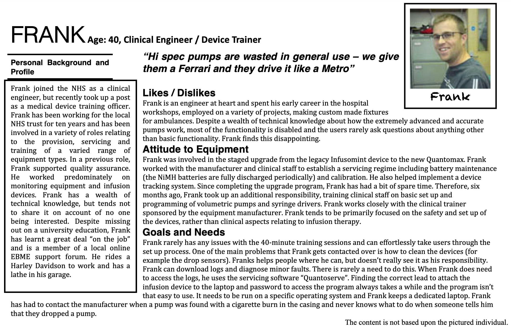

Personas
Key Point
- Develop a representative profile based on evidence captured from observations, interviews, and other sources of data of users.
What are they and Why use them
The development of a persona allows researchers to have a clear image in their mind of who they are developing a product for. A persona provides a snapshot of a generic user and provides information such as: their job title and/or responsibilities, demographics, goals and tasks they need to complete, the environment they work in, with supporting quotes from the data. An example of a persona used to highlight a clinical engineer can be seen below.
When to use them
A persona should be developed at the end of the understanding user needs phase, after all the data has been obtained and analysed.
How to use them
From the data, group similar participants together to generate a single profile that represents that user group. Each profile should contain information obtained from observations, interviews, contextual inquiries, etc., about each identified user. The information in the persona should detail the major goals and needs identified, but should be broad enough that it describes a group of participants, and not a specific individual.
Pros
Help focus the design ideation to ensure that it meets the requirements of the prescribed user; can be created quite quickly from the data.
Cons
Can become outdated quite quickly, depending on the method used to generate the persona they may be based on users’ opinions rather than reality.
Points to ponder
- How does the data support the persona?
- What motivates your persona to achieve their tasks?
- What are the needs of your persona?
- Does this persona interact with other personas, and what relationship exists between them?